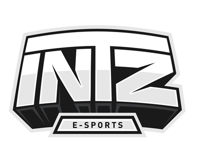
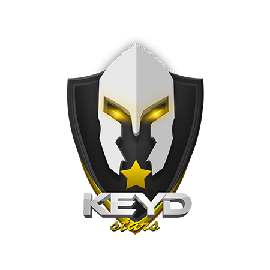
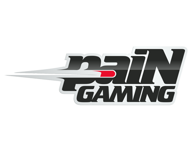
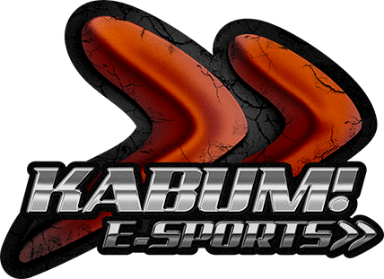

Times Brasileiros de e-sports
Mesmo falando sobre jogos de computadores, para ter um time precisa bastante investimento. Um time é bastante similar ao de outro esporte tem seus preparadores (tecnicos), os times trabalham com psicólogos e tem sua area específica para treino (game house).
Principais times do Brasil
-
CNB

A CNB e-Sports Club tem 14 anos de existência, criado em 2001. O time na época era de CS 1.5 (Counter-Strike). Em 2008 os imãos "Fury" passou a adiminitras a CNB, participando em varias modalidades,mas o principal foi o CS. Hoje o maior é o League of Legens seguido pelo Dota 2 e CS.
-
INTZ
A INTZ é um exemplo de aproveitamento desse crescimento do e-sports, os empresários Lucas Simon Almeida e Rogério "Formiga" são os donos da organização, criada em julho de 2014, "A criação do clube foi por uma oportunidade de mercado após muito estudo. Realmente criamos isso por ser um business que julgamos de rápido crescimento e grande atração", diz Lucas, mostrando assim que vale o investimento.
A INTZ mesmo sendo uma equipe nova, foi campeã na primeira etapa do CBLOL(Campeonato Brasileiro de League of Legends) e ficou segundo lugar na segunda etapa.Atualmente o INTZ conta com times em sete modalidades.
-
Keyd Stars
Dois amigos empresários, André Pontes e Eduardo "Edu" Kim. Edu começou no StarCraft, jogo de estratégia da Blizzard Entertainment, onde surgiu o time. O investimento na equipe é bem considerada, foi a primeira equipe a trazer jogadores koreanos.
-
paiN Gaming
Arthur Zarzur é o proprietário do paiN Gaming, é uma das mais bem-sucedidas do e-sports no Brasil. Foi reconhecido por vender um item raro do Dota 2 progress por US$ 38 mil.Arthur começou jogando Dota, jogou na CNB e decidiu criar seu próprio time. Hoje a Pain participa de League of Legends, CrossFire e Dota 2. Foi o segundo time Brasileiro a se classificar para o Campeonato Mundial de League of Legends.
-
KaBuM
A KaBuM é uma empresa de e-commerce uma das maiores lojas online do País.Entrou no mundo do e-sports pelo League of legends em 2013. campeã do CBLOL de 2014, e a primeira equipe brasileira a participar do Campeonato Mundial de League of Legends.